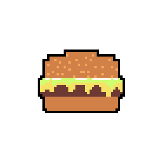

Recipe #1: A Delicious and Simple Homemade Burger!
Ingredients:
- 1lb Ground Beef
- 1 Large Egg
- 1/3 Cup Italian Breadcrumbs
- 2 Tablespoons Milk
- 2 Tablespoons Ketchup
Directions:
- Heat grill to medium-high heat.
- If you don't have a grill, or the weather isn't cooperating, the oven works just fine. Preheat to 375 degrees fahrenheit.
- Start by mixing all of the ingredients together in a large mixing bowl.
- Once ingredients are thoroughly mixed, separate into four equally sized balls and press down to form patties.
- (Note: the burgers will get thicker as they cook, so make them a little thinner than you want the finished product to be.)
- Season both sides generously with Garlic Salt and Black Pepper.
- Grill for about 5 minutes per side (or until internal temperature reaches 160 degrees fahrenheit).
- If baking, simply transfer to a baking sheet lined with foil/parchment paper and bake for 20 minutes (No need to flip them).
- Finally, tent the burgers under foil and let them rest for 10 minutes.
- Now is the perfect time to add cheese as it will be nice and melted by the time the burgers are finished resting.
- In the meantime, this is the perfect opportunity to toast your buns if desired, prepare toppings, etc.
